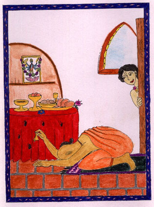
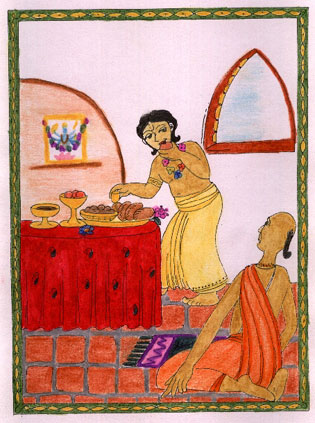
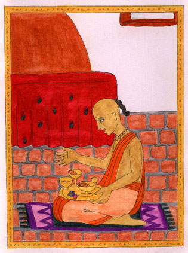
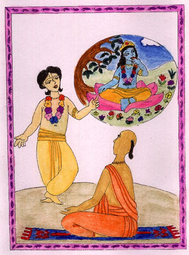

El Afortunado Brahmana Un día un brahmana peregrino, llego a la casa de Jaganath Misra El huésped empezó a cocinar una ofrenda para Visnu
 Cuando terminó de cocinar el brahmana entró en profunda meditación, ofreciendo así los alimentos al Señor Visnu.  Cuando de pronto el pequeño Nimai entró sigilosamente en la habitación y probó los alimentos. El brahmana se puso triste y pensó que su ofrenda fue inútil e inservible.  ... Y ofreció por tercera vez... ¡Oh!... ¿Qué puedo hacer? – Tal vez el Señor Visnu quiere mantenerme ayunando- pensó el brahmana.  Pero el pequeño Nimai le dijo: ¿Sabes? Primero fui Yo el hijo de madre Yasoda, y tú llegaste también como huésped a nuestra casa, y Yo, al igual que ahora, también interrumpía tus ofrendas. Tu devoción pura y humilde Me a cautivado, por ello probé tus alimentos. Así está historia del pequeño Nimai nos enseña que a Krishna solo le complace la actitud amorosa del corazón de Sus devotos. ¡Goura Hari Bolo! |